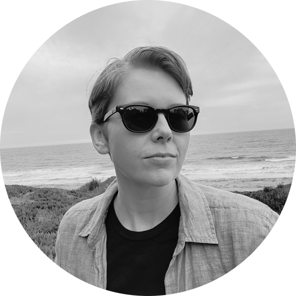

Virginia Scarlett
Open science researcher
Originally trained in plant genetics and genomics, I now do research that helps organizations plan their open science strategy. Through impact assessment, landscape analyses, surveys, and more, I can help you design programs that align with your values and help your researchers connect with a broader audience.
I don't just write reports identifying gaps. I'll help your organization fill the gaps by communicating the research insights to stakeholders and facilitating the transition to new ways of working.
Check out my projects